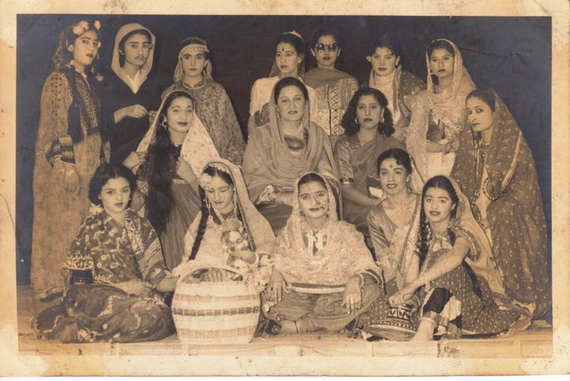
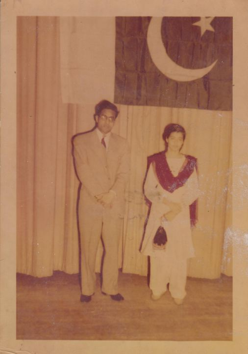
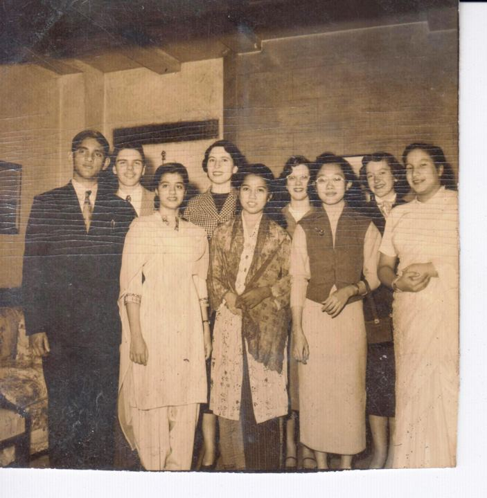
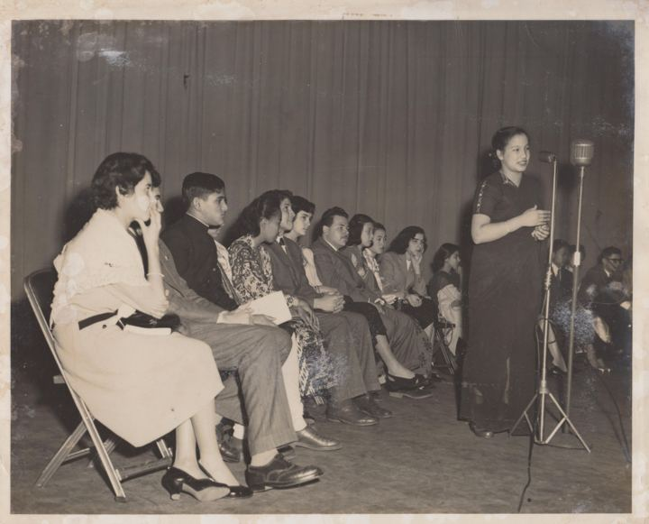
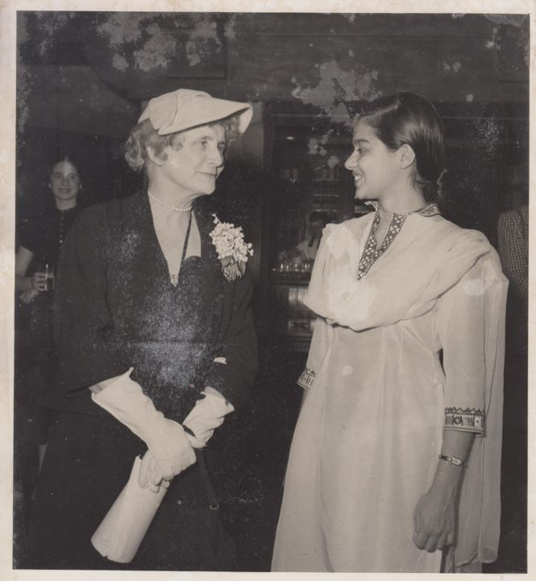
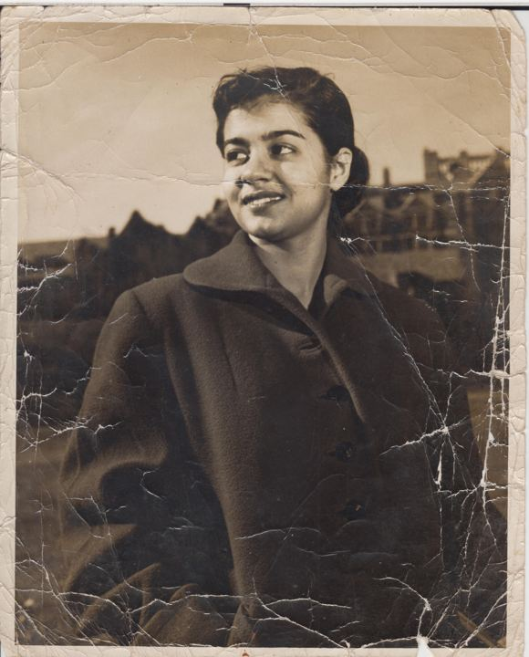
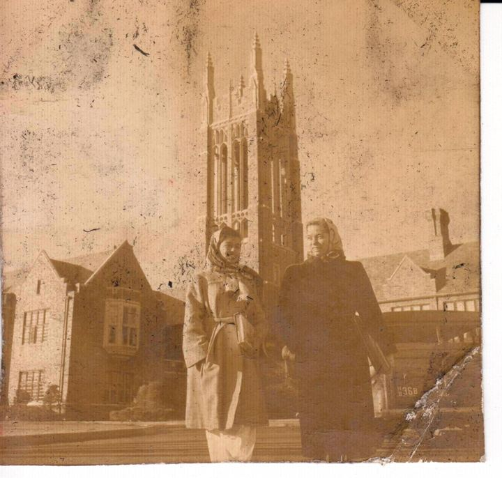
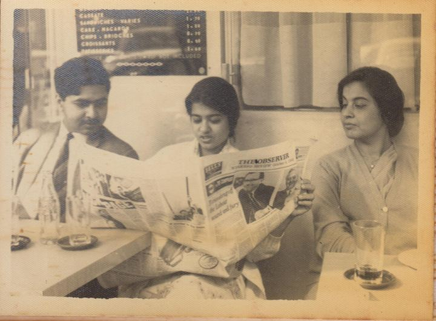
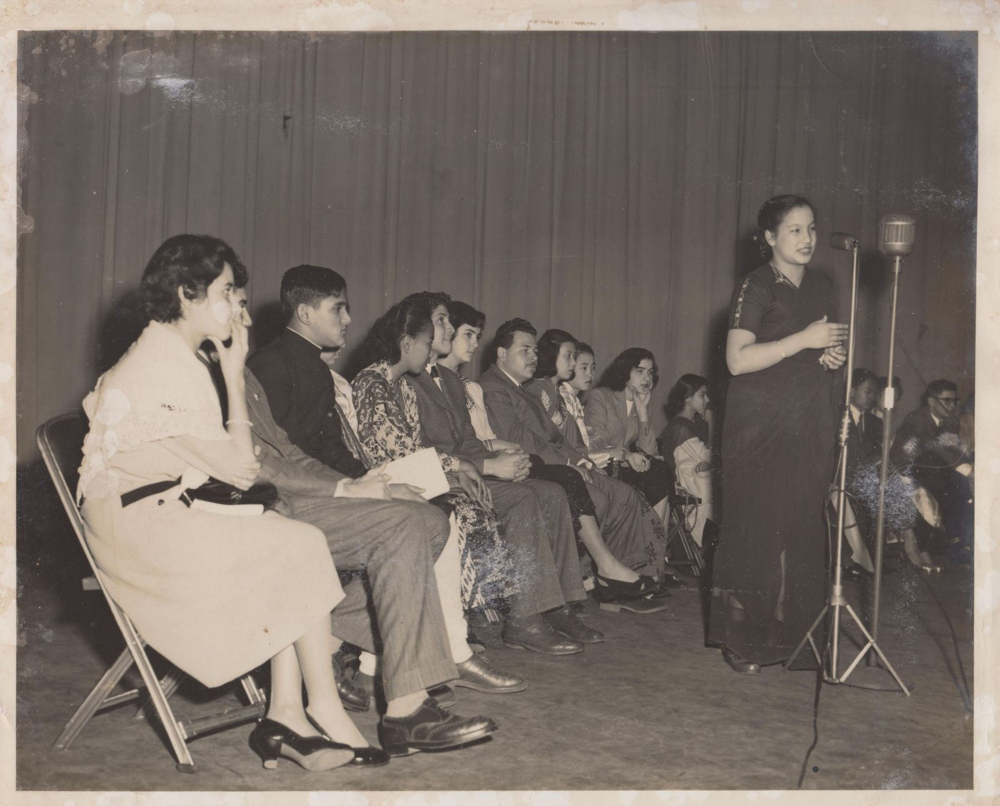

Hameeda Hossainহামিদা হোসেন
Historian, activist, writer, and editor — a life dedicated to human rights, women's justice, and civil liberties in Bangladesh and beyond. This archive gathers her published work, journalism, personal writings, and the magazines she built across five decades of public life.













Selected writings
All 31 writings →
Photograph: Speaking to an audience during the Herald Tribune Forum tour, 1952 Speeches, Talks & LecturesThe Challenge of Citizenship in Building a Just Society (BDI Lifetime Achievement Award Lecture) “We need to work together with everyone, without exception, to promote a democratic culture and respect for rights.”“Intolerance and violence cannot promise justice nor is it the way towards an open, democratic society.”
Human Rights, Justice & ReligionTowards Tolerance and JusticeWritten for the Daily Star's annual review after the 2014 election, which major parties boycotted. She laments that the democratic, secular and inclusive goals of 1971 have been lost to power struggles, impunity and intolerance. She describes the attacks on Hindu communities and on women in the Chittagong Hill Tracts, and calls for challenging impunity and renewing humanist values.“And to do so without fear or favour.”
Tributes & RemembrancesRemembering AsmaA tribute to Pakistani human rights lawyer Asma Jahangir after her sudden death at 66. It recalls her defiance of military rulers, her UN mandates and her leadership of the HRCP. It also covers her role as first co-chair of South Asians for Human Rights, which Dr. Hossain worked with her to found, and her women's rights work. It ends by calling for collective struggle without fear or favour.
Intolerance and violence cannot promise justice nor is it the way towards an open, democratic society.Towards Tolerance and Justice, 2014